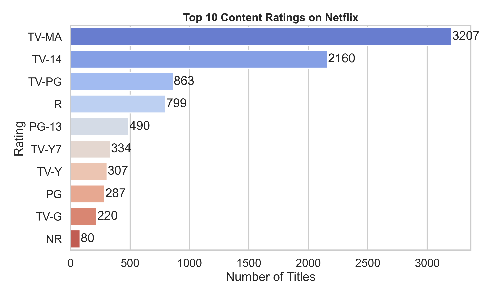

Netflix titles analyzed
Project Overview
Turning Netflix catalog data into business-ready insights
This project studies Netflix title metadata to understand how the platform's catalog has changed over time, which content types dominate, and which countries and genres contribute most to the platform's global content strategy.
analysis dimensions explored
visual insights created
cleaning, grouping, and visualization
Problem Statement
What can Netflix catalog data reveal?
The analysis answers how Netflix expanded its library, whether Movies or TV Shows dominate, which genres appear most often, and which countries drive the largest share of available content. This turns raw metadata into a clear project story recruiters can understand quickly.
Key Findings
Recruiter-friendly insights from the analysis
Content expansion accelerated after 2015
Netflix added content rapidly from 2016 to 2019, showing a major catalog expansion phase.
Movies dominate the catalog
Movies significantly outnumber TV Shows, showing Netflix's catalog is still movie-heavy.
International content is highly represented
International Movies and Dramas appear most often, highlighting Netflix's global reach.
The United States leads production
The United States contributes the most titles, followed by India and the United Kingdom.
Tools & Skills
Technical skills demonstrated
Python
Pandas
Matplotlib
Seaborn
Jupyter Notebook
Data Cleaning
Exploratory Data Analysis
Data Visualization
Insight Communication
Business Impact
How this analysis supports better content decisions
This project translates Netflix catalog metadata into decision-ready insights that can support content planning, market expansion analysis, and catalog positioning.
Content Strategy
Identifies when Netflix expanded most aggressively and which content types dominate the catalog.
Market Expansion
Highlights top contributing countries and shows where global production is most concentrated.
Audience Targeting
Uses ratings and genre patterns to understand how the catalog is positioned for viewer segments.
Visual Analysis
Charts with clear analytical meaning
Each visualization is paired with the main takeaway so the page reads like a case study, not just a gallery of plots.

Content Growth Over Time
Netflix's catalog grew sharply after 2015 and peaked around 2019, suggesting an aggressive expansion period before growth slowed in later years.

Movies vs TV Shows
Movies make up the majority of titles, showing that Netflix's catalog is still strongly weighted toward film content.

Top Genres
International Movies, Dramas, and Comedies dominate, showing strong demand for broad, globally appealing categories.

Top Producing Countries
The United States leads by a wide margin, while India and the United Kingdom are also important content contributors.

Top Directors
Repeat directors suggest recurring creator relationships and help identify frequent contributors within the catalog.

Ratings Distribution
Ratings show how Netflix content is distributed across audience groups and maturity levels, adding context to catalog positioning.
Workflow
Data analytics pipeline
Dataset
Cleaning
EDA
Visualization
Insights
Architecture
How the project is structured
Netflix CSV Dataset
Pandas Cleaning
Exploratory Analysis
Matplotlib & Seaborn
Project Insights
Project Value
What this project demonstrates
Analytical Thinking
Frames a real dataset around useful questions and converts exploration into clear findings.
Technical Execution
Uses Python libraries to clean, group, summarize, and visualize structured data.
Communication
Presents results in a way that is easy for technical and non-technical viewers to understand.
Reproduce The Analysis
How to run the project
Clone Repository
git clone https://github.com/bindhusaahithi/Netflix-Analysis.git
cd Netflix-AnalysisInstall Libraries
pip install -r requirements.txtOpen Notebook
jupyter notebook Notebook/Netflix_Analysis.ipynb